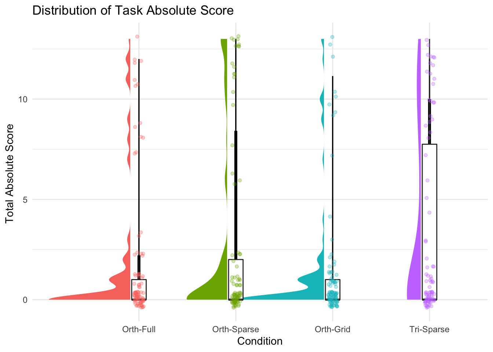
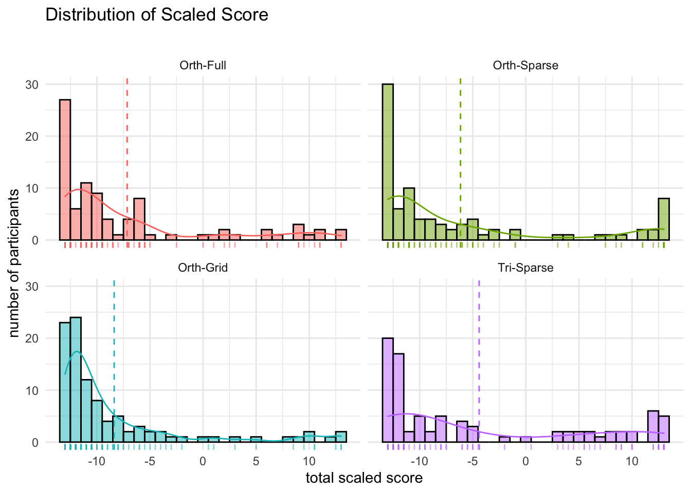
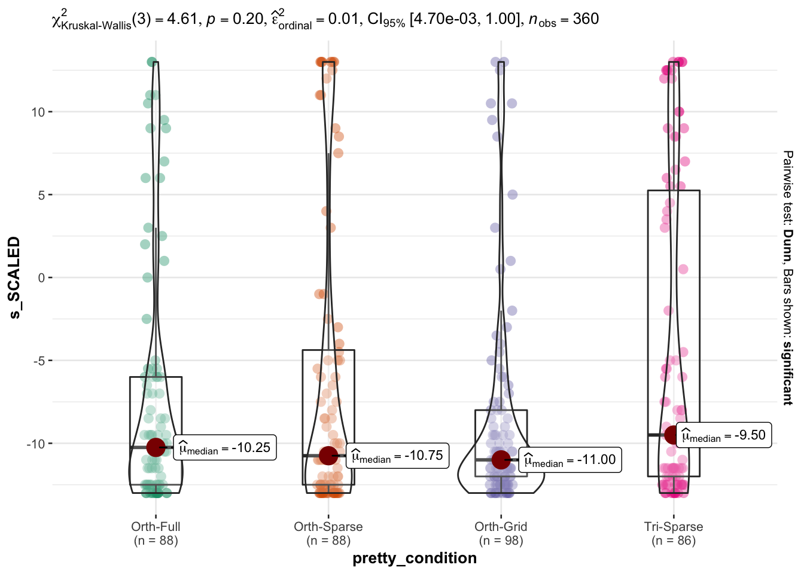
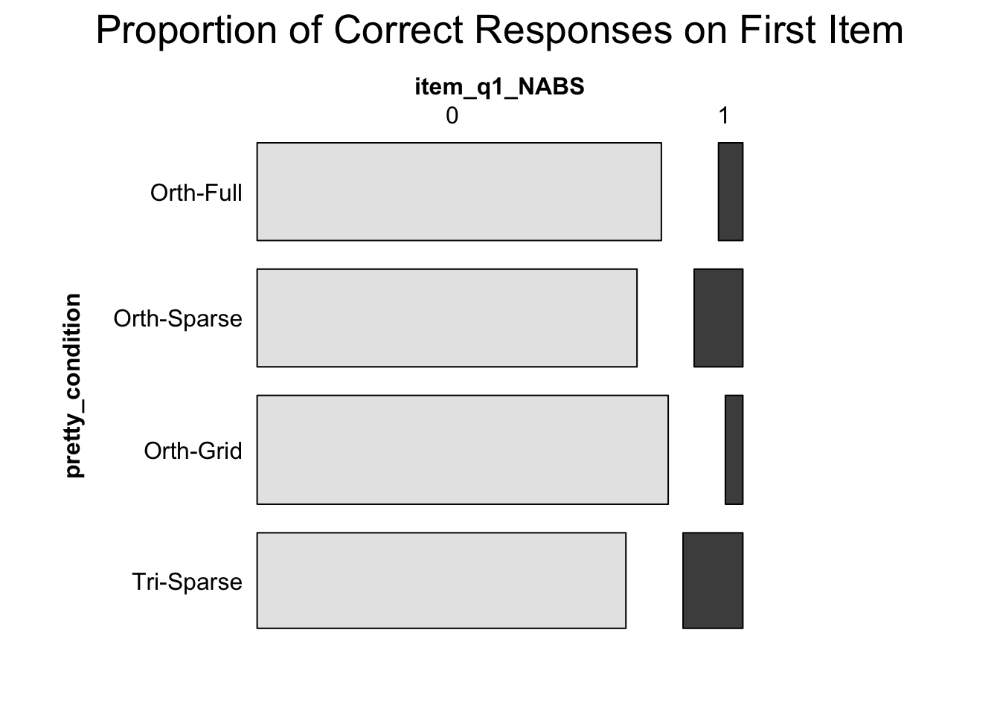
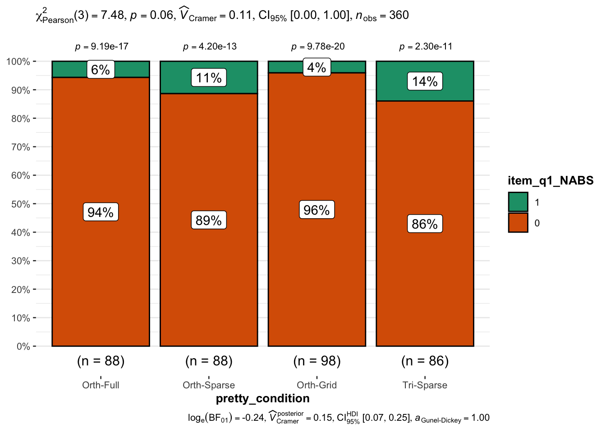
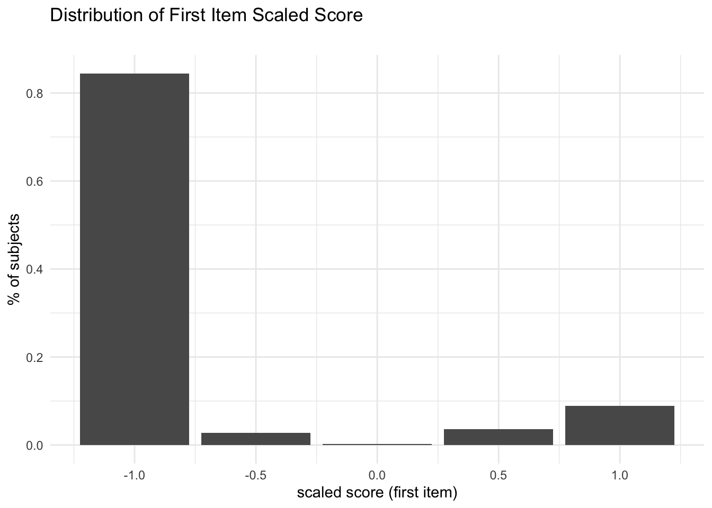
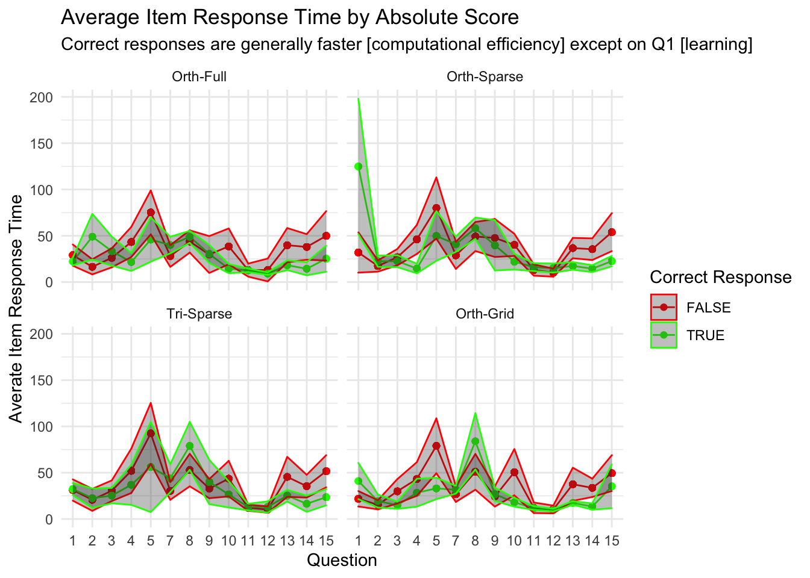

TODO check term cell counts and decide if data is pilot or included ? The purpose of this notebook is describe the distributions of dependent variables for Study SGC4A.
CODE
library(Hmisc) # %nin% operatorlibrary(mosaic) #simple descriptives [favstats]library(kableExtra) #printing tables library(vcd) #mosaicplotslibrary(ggpubr) #arrange plotslibrary(ggformula) #quick easy plotslibrary(ggdist) # uncertainty vizlibrary(ggstatsplot) #stats plots 4 dummieslibrary(ggeasy) #theme editing. the way it should belibrary(multimode) #test for multimodalitylibrary(fitdistrplus) #fitting distributionslibrary(performance) #multimodalitylibrary(tidyverse) #ALL THE THINGS#OUTPUT OPTIONSlibrary(dplyr, warn.conflicts =FALSE)options(dplyr.summarise.inform =FALSE)options(ggplot2.summarise.inform =FALSE)options(scipen=1, digits=3)#GRAPH THEMEINGtheme_set(theme_minimal())
title ="Participants by Condition and Data Collection Period"cols =c("Orth-Full", "Orth-Sparse","Orth-Grid", "Tri-Sparse","Total for Period")cont <-table(df_subjects$term, df_subjects$condition)cont %>%addmargins() %>%kbl(caption = title, col.names = cols) %>%kable_classic()
Participants by Condition and Data Collection Period
Orth-Full
Orth-Sparse
Orth-Grid
Tri-Sparse
Total for Period
winter22
88
86
88
98
360
Sum
88
86
88
98
360
Participants
CODE
#Describe participantssubject.stats <-df_subjects %>% dplyr::select(age) %>%unlist() %>%favstats()subject.stats$percent.female <- df_subjects %>%filter(gender=="Female") %>%count() %>%unlist()/nrow(df_subjects)title ="Descriptive Statistics of Participant Age and Gender"subject.stats %>%kbl (caption = title) %>%kable_classic()%>%footnote(general ="Age in Years", general_title ="Note: ",footnote_as_chunk = T)
Descriptive Statistics of Participant Age and Gender
min
Q1
median
Q3
max
mean
sd
n
missing
percent.female
18
19
20
21
37
20.5
2.29
360
0
0.722
Note: Age in Years
360 participants (72 % female ) undergraduate STEM majors at a public American University participated in exchange for course credit (age: 18 - 37 years).
RESPONSE ACCURACY
Subject Level Scores
Subject level scores summarize the the response accuracy by a particular participant across all discriminant items in the graph comprehension task.
Task Absolute Score
Recall from Section 3.1.2.1 that the absolute score (following the dichotomous scoring approach) s_NABS indicates if the subject’s response for a particular item was perfectly correct: whether they selected all correct answer options and no others (excluding certain allowed exceptions, such as also selecting the data point referenced in the question). Across the entire task, there ae 13 strategy discriminating questions.
Descriptive Statistics of Task Response Accuracy (Total Absolute Score)
min
Q1
median
Q3
max
mean
sd
n
missing
0
0
0
2
13
2.22
4.02
360
0
Note: # questions correct [0,13]
When combined overall, total absolute accuracy scores in the TEST phase (n = 360) range from 0 to 13 with a slightly lower mean score of (M = 2.22, SD = 4.02).
CODE
#GGFORMULA | DENSITY HISTOGRAM SUBJECT TOTAL ABSOLUTEgf_props(~s_NABS, data = df_subjects) +labs(x ="number of correct responses",y ="% of subjects",title ="Distribution of Task Absolute Score ",subtitle ="")
CODE
##GGPUBR | HIST+DENSITY SCORE BY CONDITION/MODEp <-gghistogram(df_subjects, x ="s_NABS", binwidth =0.5,add ="mean", rug =TRUE,fill ="pretty_condition", #, palette = c("#00AFBB", "#E7B800"),add_density =TRUE)facet(p, facet.by=c("pretty_condition")) +labs( title ="Distribution of Task Absolute Score",subtitle ="",x ="Total Absolute Score", y ="number of subjects") +theme_minimal() +theme(legend.position ="blank")
CODE
##VERTICAL RAINCLOUD USING GGDISTRggplot(df_subjects, aes(x = pretty_condition, y = s_NABS,fill = pretty_condition) ) + ggdist::stat_halfeye(side ="left",justification =1.1,width =1, point_colour =NA ) +geom_boxplot(inherit.aes =FALSE, #supress fillmapping =aes(x=pretty_condition, y = s_NABS),width = .15, outlier.shape =NA ) +geom_point(inherit.aes =FALSE, #supress fillmapping =aes(x=pretty_condition, y = s_NABS, color = pretty_condition),size =1.3,alpha = .3,position =position_jitter( seed =1, width = .05 )) +labs( title ="Distribution of Task Absolute Score ",x ="Condition", y ="Total Absolute Score ") +theme(legend.position ="blank") +coord_cartesian(xlim =c(0.5, NA), clip ="off")

CODE
#STATSPLOTggbetweenstats(y = s_NABS, x = pretty_condition, data = df_subjects,type ="nonparametric", var.equal =FALSE,pairwide.display ="significant", )
CODE
#PLOT EMPIRICIAL CUMULATIVE DISTRIBUTION FUNCTIONggplot(data = df_subjects, aes(s_NABS)) +stat_ecdf(geom ="step") +facet_grid(pretty_condition~pretty_mode) +labs( title ="Empirical Cumulative Density Function — Task Absolute Score ",x ="Total Absolute Score [0,13]", y ="Cumulative Probability")
Visual inspection of this distribution suggests it is not normal, and perhaps bimodal. We verify this via an excess mass test (Ameijeiras-Alsonso et. al 2018).
CODE
multimode::modetest(df_subjects$s_NABS)
Warning in multimode::modetest(df_subjects$s_NABS): A modification of the data
was made in order to compute the excess mass or the dip statistic
Ameijeiras-Alonso et al. (2019) excess mass test
data: df_subjects$s_NABS
Excess mass = 0.06, p-value <2e-16
alternative hypothesis: true number of modes is greater than 1
The excess mass test for multimodality suggests there is not enough mass at the positive end of the score distribution to be considered multimodal.
Task Scaled Scores
The total scaled score s_SCALED summarizes the scaled score on the 13 strategy-discriminant questions, for each subject. This score ranges from from -13 (all orthogonal) to 13 (all triangular). Recall that the s_SCALED score for an item is a numeric representation of the strategy-consistent response, scaled from -1 to +1 (see Section 4.1.4)
CODE
title ="Descriptive Statistics of Response Accuracy"scaled.stats <- df_subjects %>% dplyr::select(s_SCALED) %>%unlist() %>%favstats()scaled.stats %>%kbl (caption = title) %>%kable_classic()
Descriptive Statistics of Response Accuracy
min
Q1
median
Q3
max
mean
sd
n
missing
-13
-12.5
-10.5
-5
13
-6.58
8.23
360
0
Overall, task scaled scores (n = 360) range from -13 to 13 with a slightly lower mean score of (M = -6.58, SD = 8.23).
CODE
#GGFORMULA | DENSITY HISTOGRAM SUBJECT TOTAL SCALEDgf_props(~item_test_SCALED, data = df_subjects) +labs(x ="total scaled score",y ="% of subjects",title ="Distribution of Scaled Score ",subtitle ="Modes at high and low ends of scale suggest concentration of high (vs) low understanding")
CODE
##GGPUBR | HIST+DENSITY SCORE BY CONDITION/MODEp <-gghistogram(df_subjects, x ="s_SCALED",binwidth=1,add ="mean", rug =TRUE,fill ="pretty_condition", #, palette = c("#00AFBB", "#E7B800"),add_density =TRUE) facet(p, facet.by=c("pretty_condition")) +labs( title ="Distribution of Scaled Score",subtitle ="",x ="total scaled score", y ="number of participants") +theme_minimal() +theme(legend.position ="blank")

CODE
##VERTICAL RAINCLOUD USING GGDISTRggplot(df_subjects, aes(x = pretty_condition, y = s_SCALED,fill = pretty_condition) ) + ggdist::stat_halfeye(side ="left",justification =1.1,width =1, point_colour =NA ) +geom_boxplot(inherit.aes =FALSE, #supress fillmapping =aes(x=pretty_condition, y = s_SCALED),width = .15, outlier.shape =NA ) +geom_point(inherit.aes =FALSE, #supress fillmapping =aes(x=pretty_condition, y = s_SCALED, color = pretty_condition),size =1.3,alpha = .3,position =position_jitter( seed =1, width = .05 )) +labs( title ="Distribution of Task Scaled Score",x ="Condition", y ="Total Scaled ") +theme(legend.position ="blank") +coord_cartesian(xlim =c(0.5, NA), clip ="off")
CODE
#STATSPLOTggbetweenstats(y = s_SCALED, x = pretty_condition, data = df_subjects,type ="nonparametric", var.equal =FALSE,pairwide.display ="significant", )

CODE
#PLOT EMPIRICIAL CUMULATIVE DISTRIBUTION FUNCTIONggplot(data = df_subjects, aes(s_SCALED)) +stat_ecdf(geom ="step") +facet_grid(pretty_condition ~ pretty_mode) +labs( title ="Empirical Cumulative Density Function — Task Scaled Score",x ="Test Phase Scaled Score [-13,13]", y ="Cumulative Probability")
Visual inspection of this distribution suggests it is not normal, and perhaps perhaps bimodal. We verify this via an excess mass test (Ameijeiras-Alsonso et. al 2018).
CODE
multimode::modetest(df_subjects$s_SCALED)
Warning in multimode::modetest(df_subjects$s_SCALED): A modification of the data
was made in order to compute the excess mass or the dip statistic
Ameijeiras-Alonso et al. (2019) excess mass test
data: df_subjects$s_SCALED
Excess mass = 0.07, p-value <2e-16
alternative hypothesis: true number of modes is greater than 1
The excess mass test for multimodality suggests there is not enough mass at the positive end of the score distribution to be considered multimodal.
First Item Scores
Next we consider the response accuracy on just the first question of the graph comprehension task: a subject’s first exposure to the TM graph.
First Item Absolute Score
CODE
title ="Proportion of Correct Response on First Item (Combined)"item.contingency <- df_subjects %>% dplyr::select(item_q1_NABS, pretty_condition) %>%table() %>%addmargins(2) %>%prop.table(margin=2) %>%addmargins(1)item.contingency %>%kbl (caption = title) %>%kable_classic()
Proportion of Correct Response on First Item (Combined)
Orth-Full
Orth-Sparse
Orth-Grid
Tri-Sparse
Sum
0
0.943
0.886
0.959
0.86
0.914
1
0.057
0.114
0.041
0.14
0.086
Sum
1.000
1.000
1.000
1.00
1.000
Across data collection sessions, first-item accuracy is consistent across experimental conditions. Incorrect answers are far more frequent (91%) than correct answers (9%). Highest accuracy is achieved in the Triangular gridlines condition, with roughly 14% correct response rate, compared to only 6% in the orthogonal axis control.
CODE
#PROPORTIONAL BAR CHARTgf_props(~item_q1_NABS, data = df_subjects) +labs(x ="response accuracy",y ="% subjects",title ="Proportion of Correct Responses on First Item",subtitle="")+theme(legend.position ="none")+theme_ggdist()
CODE
#STACKED BAR CHARTdf_subjects %>%ggplot(data = .,mapping =aes(x = pretty_condition,fill =as.factor(item_q1_NABS))) +geom_bar(position ="fill" ) +#,color = "black") +scale_fill_brewer(palette ="Set1") +labs(x ="response accuracy",title ="Proportion of Correct Responses on First Item",x ="Condition",fill ="",subtitle="")
CODE
#MOSAIC PLOTvcd::mosaic(main="Proportion of Correct Responses on First Item",data = df_subjects, item_q1_NABS ~ pretty_condition, rot_labels=c(0,90,0,0), offset_varnames =c(left =4.5), offset_labels =c(left =-0.5),just_labels ="right",spacing =spacing_dimequal(unit(1:2, "lines")))

CODE
#STATSPLOTggbarstats(x = item_q1_NABS,y = pretty_condition, data = df_subjects)

First Item Scaled Score
At the item level, the scaled score gives us a numeric measure of correctness of interpretation, ranging from -1 to 1. (note: we evaluate scaled_score on the first item rather than interpretation, because no orthogonal interpretation is available in the impasse condition)
Descriptive Statistics of Response Accuracy (First Item Scaled Score)
min
Q1
median
Q3
max
mean
sd
n
missing
-1
-1
-1
-1
1
-0.751
0.621
360
0
When combined overall, first item scaled scores (n = 360) range from -1 to 1 with a slightly lower mean score of (M = -0.75, SD = 0.62).
CODE
#GGFORMULA | PROPORTIONAL HISTOGRAM SUBJECT FIRST SCALEDgf_props(~item_q1_SCALED, data = df_subjects) +labs(x ="scaled score (first item)",y ="% of subjects",title ="Distribution of First Item Scaled Score",subtitle ="")

CODE
##GGPUBR | HIST+DENSITY SCORE BY CONDITION/MODEp <-gghistogram(df_subjects, x ="item_q1_SCALED", binwidth =0.5,add ="mean", rug =TRUE,fill ="pretty_condition", #, palette = c("#00AFBB", "#E7B800"),add_density =TRUE) facet(p, facet.by=c("pretty_condition")) +labs( title ="Distribution of First Item Scaled Score (by Mode and Condition)",subtitle ="",x ="scaled score (firt item) ", y ="number of participants") +theme_minimal() +theme(legend.position ="blank")
CODE
#STACKED BAR CHARTdf_subjects %>%ggplot(data = .,mapping =aes(x = pretty_condition,fill =as.factor(item_q1_SCALED))) +geom_bar(position ="fill" ) +#,color = "black") +scale_fill_brewer(palette ="Set1") +labs(x ="response accuracy",title ="Type of Responses on First Item (by Modality and Condition)",x ="Condition",fill ="",subtitle="")
CODE
#STATSPLOTggbarstats(x = item_q1_SCALED,y = pretty_condition, data = df_subjects)
Interpretation Scores
Next we consider the the interpretations assigned to each response. For each response given by a participant to a question, we assign an interpretation label based on the interpretation the response most closely matches (see Section 3.2.3).
CODE
title ="Proportion of Interpretations Across Items Items By Condition"item.contingency <- df_items %>% dplyr::select(interpretation, pretty_condition) %>%table() %>%addmargins(2) %>%prop.table(margin=2) %>%addmargins(1)item.contingency %>%kbl (caption = title) %>%kable_classic()
Proportion of Interpretations Across Items Items By Condition
Orth-Full
Orth-Sparse
Tri-Sparse
Orth-Grid
Sum
Orthogonal
0.568
0.558
0.484
0.608
0.556
frenzy
0.005
0.008
0.004
0.005
0.006
?
0.125
0.089
0.114
0.114
0.111
reference
0.000
0.002
0.001
0.003
0.001
blank
0.018
0.023
0.025
0.035
0.026
both tri + orth
0.120
0.119
0.115
0.120
0.118
Tversky
0.025
0.018
0.031
0.020
0.024
Triangular
0.139
0.183
0.227
0.094
0.158
Sum
1.000
1.000
1.000
1.000
1.000
CODE
#PROPORTIONAL BAR CHARTgf_propsh(~interpretation, data = df_items, fill =~pretty_condition) %>%gf_facet_grid(pretty_condition~pretty_mode) +labs(x ="% of items",title ="Proportion of Interpretations Across Items",subtitle="")+theme(legend.position ="none")
CODE
#STACKED BAR CHARTdf_items %>%ggplot(data = .,mapping =aes(x = pretty_condition,fill =as.factor(interpretation))) +geom_bar(position ="fill" ) +#,color = "black") +scale_fill_brewer(palette ="Set1") +labs(x ="response accuracy",title ="Response Types on All Items (by Condition)",x ="Condition",fill ="",subtitle="")
CODE
#MOSAIC PLOT# vcd::mosaic(main="Proportion of Interpretations across Conditions",# data = df_items, pretty_condition ~ interpretation, rot_labels=c(0,90,0,0), # offset_varnames = c(left = 4.5), offset_labels = c(left = -0.5),just_labels = "right",# spacing = spacing_dimequal(unit(1:2, "lines"))) #STATSPLOTggbarstats(x = interpretation,y = pretty_condition, data = df_items)
Cumulative Task Performance
CODE
#VISUALIZE progress over time ABSOLUTE score ggplot(data = df_absolute_progress, aes(x = question, y = score, group = subject, alpha =0.01, color = pretty_condition)) +geom_line(position=position_jitter(w=0.15, h=0.15), size=0.1) +facet_wrap(~pretty_condition) +labs (title ="Cumulative Absolute Score over sequence of task", x ="Question" , y ="Cumulative Absolute Score") +scale_x_continuous(breaks =c(1,2,3,4,5,6,7,8,9,10,11,12,13)) +theme_minimal() +theme(legend.position ="blank")
CODE
#VISUALIZE progress over time SCALED score ggplot(data = df_scaled_progress, aes(x = question, y = score, group = subject, alpha =0.01, color = pretty_condition)) +geom_line(position=position_jitter(w=0.15, h=0.15), size=0.1) +facet_wrap(~pretty_condition) +labs (title ="Cumulative Scaled Score over sequence of task", x ="Question" , y ="Cumulative Scaled Score") +scale_x_continuous(breaks =c(1,2,3,4,5,6,7,8,9,10,11,12,13)) +theme_minimal() +theme(legend.position ="blank")
RESPONSE LATENCY
Time on First Item
Here we consider the time spent on just the first individual item (first exposure to graph).
CODE
#DESCRIBE distribution of response timetime.stats <- df_subjects %>% dplyr::select(item_q1_rt) %>%unlist() %>%favstats()title ="Descriptive Statistics of First Response Time (seconds)"time.stats %>%kbl(caption = title) %>%kable_classic()
Descriptive Statistics of First Response Time (seconds)
min
Q1
median
Q3
max
mean
sd
n
missing
5.6
13.8
21.6
35.6
536
31.1
39.1
360
0
Response time on the first item for subjects (n = 360) ranged from 5.6 to 536.39 minutes with a mean duration of (M = 31.08, SD = 39.13).
CODE
#HISTOGRAMgf_dhistogram(~item_q1_rt, data = df_subjects) %>%gf_vline(xintercept =~time.stats["lab",]$mean, color ="black") %>%gf_fitdistr(dist="gamma", color="red")+labs(title="Distribution of First Item Response Time (seconds)", subtitle ="fit by gamma distribution", x ="First Item Response Time (seconds)", y ="% items")
Warning in densfun(x, parm[1], parm[2], ...): NaNs produced
Warning in densfun(x, parm[1], parm[2], ...): NaNs produced
Warning in densfun(x, parm[1], parm[2], ...): NaNs produced
Warning in densfun(x, parm[1], parm[2], ...): NaNs produced
Warning in densfun(x, parm[1], parm[2], ...): NaNs produced
Warning in densfun(x, parm[1], parm[2], ...): NaNs produced
Warning in densfun(x, parm[1], parm[2], ...): NaNs produced
Warning in densfun(x, parm[1], parm[2], ...): NaNs produced
Warning in densfun(x, parm[1], parm[2], ...): NaNs produced
Warning in densfun(x, parm[1], parm[2], ...): NaNs produced
Warning in densfun(x, parm[1], parm[2], ...): NaNs produced
Warning in densfun(x, parm[1], parm[2], ...): NaNs produced
Warning in densfun(x, parm[1], parm[2], ...): NaNs produced
##GGPUBR | HIST+DENSITY SCORE BY CONDITION/MODEp <-gghistogram(df_subjects, x ="item_q1_rt", binwidth =0.5,add ="mean", rug =TRUE,fill ="pretty_condition", #, palette = c("#00AFBB", "#E7B800"),add_density =TRUE)facet(p, facet.by=c("pretty_condition")) +labs( title ="Distribution of First Item Response Time (seconds)",subtitle ="",x ="First Item Response Time (seconds)", y ="number of items") +theme_minimal() +theme(legend.position ="blank")
CODE
#recode as boolean correctdf_subjects <- df_subjects %>%mutate(item_q1_NABS =as.logical(item_q1_NABS))##RAINCLOUD USING GGDISTRggplot(df_subjects, aes(x = pretty_condition, y = item_q1_rt, color = item_q1_NABS) ) + ggdist::stat_halfeye(side ="left",justification =1.2, adjust = .5, width = .6, .width =0, point_colour =NA) +geom_boxplot(width = .15, outlier.shape =NA ) +geom_point(size =1.3,alpha = .3,position =position_jitter( seed =1, width = .1 )) +labs( title ="Distribution of First Item Response Time (seconds)",subtitle ="",y ="First Item Response Time (s)", x ="Condition") +theme_ggdist()
Here we consider the time spent on an individual item (across all items).
CODE
#DESCRIBE distribution of response timetime.stats <- df_items %>% dplyr::select(rt_s) %>%unlist() %>%favstats()title ="Descriptive Statistics of Item Response Latency (seconds)"time.stats %>%kbl(caption = title) %>%kable_classic()
Descriptive Statistics of Item Response Latency (seconds)
min
Q1
median
Q3
max
mean
sd
n
missing
0.785
12.1
21.8
40.6
536
33.1
36
5400
0
Time on an individual item for subjects (n = 5400) ranged from 0.78 to 536.39 minutes with a mean duration of (M = 33.13, SD = 35.95).
CODE
#HISTOGRAMgf_dhistogram(~rt_s, data = df_items) %>%gf_vline(xintercept =~time.stats["lab",]$mean, color ="black") %>%gf_fitdistr(dist="gamma", color="red")+labs(title="Distribution of Item Response Time (seconds)", subtitle ="fit by gamma distribution", x ="Item Response Time (seconds)", y ="% items")
Warning in densfun(x, parm[1], parm[2], ...): NaNs produced
Warning in densfun(x, parm[1], parm[2], ...): NaNs produced
Warning in densfun(x, parm[1], parm[2], ...): NaNs produced
Warning in densfun(x, parm[1], parm[2], ...): NaNs produced
Warning in densfun(x, parm[1], parm[2], ...): NaNs produced
Warning in densfun(x, parm[1], parm[2], ...): NaNs produced
Warning in densfun(x, parm[1], parm[2], ...): NaNs produced
Here we consider the time spent on the entire experimental task.
CODE
#DESCRIBE distribution of response timetime.stats <- df_subjects %>% dplyr::select(rt_m) %>%unlist() %>%favstats()title ="Descriptive Statistics of Total Task Response Latency (minutes)"time.stats %>%kbl(caption = title) %>%kable_classic()
Descriptive Statistics of Total Task Response Latency (minutes)
min
Q1
median
Q3
max
mean
sd
n
missing
1.19
5.08
6.85
9.1
26.8
7.48
3.52
360
0
Total time on task for subjects (n = 360) ranged from 1.19 to 26.82 minutes with a mean duration of (M = 7.48, SD = 3.52).
CODE
#HISTOGRAMgf_dhistogram(~rt_m, data = df_subjects) %>%gf_vline(xintercept =~time.stats["lab",]$mean, color ="black") %>%gf_fitdistr(dist="gamma", color="red")+labs(title="Distribution of Total Response Time (minutes)", subtitle ="fit by gamma distribution", x ="Total Response Time (minutes)", y ="% subjects")
##GGPUBR | HIST+DENSITY SCORE BY CONDITION/MODEp <-gghistogram(df_subjects, x ="rt_m", binwidth =0.5,add ="mean", rug =TRUE,fill ="pretty_condition", #, palette = c("#00AFBB", "#E7B800"),add_density =TRUE)facet(p, facet.by=c("pretty_condition")) +labs( title ="Distribution of Total Response Time (minutes)",subtitle ="",x ="Scaffold Phase Time (minutes)", y ="number of subjects") +theme_minimal() +theme(legend.position ="blank")
CODE
##VERTICAL RAINCLOUD USING GGDISTRggplot(df_subjects, aes(x = pretty_condition, y = rt_m, fill = pretty_condition)) + ggdist::stat_halfeye(side ="left",justification =1.2, adjust = .5, width = .6, .width =0, point_colour =NA) +geom_boxplot(inherit.aes =FALSE, #supress fillmapping =aes(x=pretty_condition, y = rt_m),width = .15, outlier.shape =NA ) +geom_point(inherit.aes =FALSE, #supress fillmapping =aes(x=pretty_condition, y = rt_m, color = pretty_condition),size =1.3,alpha = .3,position =position_jitter( seed =1, width = .05 ))+labs( title ="Distribution of Total Response Time (minutes)",subtitle ="",y ="Total Response Time (minutes)", x ="Condition") +theme_ggdist() +theme(legend.position ="blank") #+
#SCATTERPLOT [SCORE X ITEM RESPONSE TIME]gf_jitter( s_SCALED ~ rt_m, data = df_subjects, alpha =0.5, color=~pretty_condition) %>%gf_facet_wrap(~pretty_condition) +labs(title ="Total (Scaled) Score by TOTAL Item Response Time",subtitle ="", x ="Total Item Response Time (minutes)", y ="Total Scaled Score " ) +theme(legend.position ="blank")
CODE
#SCATTERPLOT [SCORE X ITEM RESPONSE TIME]gf_jitter( s_SCALED ~ item_avg_rt, data = df_subjects, alpha =0.5, color=~pretty_condition) %>%gf_facet_wrap(~pretty_condition) +labs(title ="Total (Scaled) Score by MEAN Item Response Time",subtitle ="", x ="Average Item Response Time (seconds)", y ="Total Scaled Score" ) +theme(legend.position ="blank")
CODE
#SCATTERPLOT [SCORE X ITEM RESPONSE TIME]gf_jitter( s_SCALED ~ item_max_rt, data = df_subjects %>%filter(item_max_rt <400), alpha =0.5, color=~pretty_condition) %>%gf_facet_wrap(~pretty_condition) +labs(title ="Total (Scaled) Score by MAX Item Response Time",subtitle ="", x ="MAX Item Response Time (s)", y ="Total Scaled Score " ) +theme(legend.position ="blank")
CODE
#NOTE: LOG transforms of the RT do not yield linear relationships
Average Item RT by Accuracy
CODE
q.stats <- df_items %>%filter(q !=6) %>% dplyr::group_by(q, pretty_condition, score_niceABS) %>% dplyr::summarise(m =mean(rt_s),sd =sd(rt_s),sd = tidyr::replace_na(sd,0),lo = m-sd/2,hi = m+sd/2,group =paste(pretty_condition,"-",score_niceABS))gf_line( m ~ q, group =~group, color =~as.factor(score_niceABS),data = q.stats) %>%gf_point() %>%gf_ribbon(lo+hi~q) %>%gf_facet_wrap(~pretty_condition) +scale_color_manual(values=c("red","green")) +labs(title ="Average Item Response Time by Absolute Score",subtitle ="Correct responses are generally faster [computational efficiency] except on Q1 [learning]",x ="Question", y ="Averate Item Response Time", color="Correct Response")

CODE
#GGDIST LINERIBBON# df_items %>%# ggplot(aes(y = rt_s, x = q, fill = pretty_condition)) +# stat_lineribbon(alpha = 1/4, point_interval = "mean_qi") + facet_wrap(~pretty_condition)
CODE
q.stats <- df_items %>%filter(q %nin%c(6,9)) %>% dplyr::group_by(q, pretty_condition, interpretation) %>% dplyr::summarise(m =mean(rt_s),sd =sd(rt_s),sd = tidyr::replace_na(sd,0),lo = m-sd/2,hi = m+sd/2,group =paste(pretty_condition,"-",score_SCALED))gf_line( m ~as.factor(q), group =~group, color =~interpretation,data = q.stats) %>%gf_point() %>%gf_ribbon(lo+hi~as.factor(q)) %>%gf_facet_grid(interpretation~pretty_condition) +#+ scale_color_manual(values=c("red","green")) + labs(title ="Average Item Response Time by Interpretation",subtitle ="Correct responses are generally faster [computational efficiency] except on Q1 [learning]",caption="NOTE: Points with no ribbon indicate singular response",x ="Question", y ="Averate Item Response Time", color="Interpretation")
geom_path: Each group consists of only one observation. Do you need to adjust
the group aesthetic?
CODE
#GGDIST LINERIBBONdf_items %>%filter(q %nin%c(6,9)) %>%mutate( interpretation =recode(interpretation, "reference"="blank", "frenzy"="?")) %>%ggplot(aes(y = rt_s, x = q, fill = interpretation)) +stat_lineribbon(alpha =1/4, point_interval ="mean_qi") +facet_grid(interpretation ~ pretty_condition) +labs( title ="Average Response Time by Question Interpretation", x ="Question", y="Averate Item Response Time (s)")
---subtitle: 'Study SGC4A | 3 Description'---\newpage# Description {#sec-SGC4A-description}**TODO** check term cell counts and decide if data is pilot or included ?*The purpose of this notebook is describe the distributions of dependent variables for Study SGC4A.*```{r}#| label: SETUP#| warning : false#| message : falselibrary(Hmisc) # %nin% operatorlibrary(mosaic) #simple descriptives [favstats]library(kableExtra) #printing tables library(vcd) #mosaicplotslibrary(ggpubr) #arrange plotslibrary(ggformula) #quick easy plotslibrary(ggdist) # uncertainty vizlibrary(ggstatsplot) #stats plots 4 dummieslibrary(ggeasy) #theme editing. the way it should belibrary(multimode) #test for multimodalitylibrary(fitdistrplus) #fitting distributionslibrary(performance) #multimodalitylibrary(tidyverse) #ALL THE THINGS#OUTPUT OPTIONSlibrary(dplyr, warn.conflicts =FALSE)options(dplyr.summarise.inform =FALSE)options(ggplot2.summarise.inform =FALSE)options(scipen=1, digits=3)#GRAPH THEMEINGtheme_set(theme_minimal()) ``````{r}#| label: IMPORT-DATA#| warning : false#| message : false# HACK WD FOR LOCAL RUNNING?# imac = "/Users/amyraefox/Code/SGC-Scaffolding_Graph_Comprehension/SGC-X/ANALYSIS/MAIN"# mbp = "/Users/amyfox/Sites/RESEARCH/SGC—Scaffolding Graph Comprehension/SGC-X/ANALYSIS/MAIN"# setwd(mbp)#IMPORT DATA df_items <-read_rds('analysis/SGC4A/data/2-scored-data/sgc4a_scored_items.rds')df_subjects <-read_rds('analysis/SGC4A/data/2-scored-data/sgc4a_scored_participants.rds') df_absolute_progress <-read_csv('analysis/SGC4A/data/2-scored-data/sgc4a_absolute_progress.csv')df_scaled_progress <-read_csv('analysis/SGC4A/data/2-scored-data/sgc4a_scaled_progress.csv')#TREAT QS AS FACTORSdf_items$q =as.factor(df_items$q)#REORDER FACTORS# order <- c("Orth-Full", "Orth-Sparse", "Orth-Grid", "Tri-Sparse")# df_subjects <- df_subjects %>% mutate(# pretty_condition = factor(pretty_condition, levels = order))# df_items <- df_items %>% mutate(# pretty_condition = factor(pretty_condition, levels = order))```**TEMP REMOVE IN PERSON DATA**```{r}df_subjects <- df_subjects %>%filter(mode =="asynch") %>%droplevels()df_items <- df_items %>%filter(mode =="asynch") %>%droplevels()```## SAMPLE### Data CollectionData were collected online in Winter 2022. ```{r}#| label : INSPECT-DATA-COLLECTIONtitle ="Participants by Condition and Data Collection Period"cols =c("Orth-Full", "Orth-Sparse","Orth-Grid", "Tri-Sparse","Total for Period")cont <-table(df_subjects$term, df_subjects$condition)cont %>%addmargins() %>%kbl(caption = title, col.names = cols) %>%kable_classic()```### Participants```{r}#| label: DESC-PARTICIPANTS#Describe participantssubject.stats <-df_subjects %>% dplyr::select(age) %>%unlist() %>%favstats()subject.stats$percent.female <- df_subjects %>%filter(gender=="Female") %>%count() %>%unlist()/nrow(df_subjects)title ="Descriptive Statistics of Participant Age and Gender"subject.stats %>%kbl (caption = title) %>%kable_classic()%>%footnote(general ="Age in Years", general_title ="Note: ",footnote_as_chunk = T) ````r subject.stats$n` participants (`r round((subject.stats$percent.female),2) * 100` % female ) undergraduate STEM majors at a public American University participated in exchange for course credit (age: `r (subject.stats['min'])` - `r (subject.stats['max'])` years).## RESPONSE ACCURACY### Subject Level ScoresSubject level scores summarize the the response accuracy by a particular participant across all discriminant items in the graph comprehension task.#### Task Absolute ScoreRecall from [Section -@sec-absolute-scoring] that the absolute score (following the dichotomous scoring approach) `s_NABS` indicates if the subject's response for a particular item was *perfectly* correct: whether they selected all correct answer options and no others (excluding certain allowed exceptions, such as also selecting the data point referenced in the question). Across the entire task, there ae 13 strategy discriminating questions. ```{r}#| label: DESC-SUBJ-ABS#| title ="Descriptive Statistics of Task Response Accuracy (Total Absolute Score)"abs.stats <- df_subjects %>% dplyr::select(s_NABS) %>%unlist() %>%favstats()abs.stats %>%kbl (caption = title) %>%kable_classic() %>%footnote(general ="# questions correct [0,13]", general_title ="Note: ",footnote_as_chunk = T) ```When combined *overall*, total absolute accuracy scores in the TEST phase (n = `r abs.stats$n`) range from `r round(abs.stats$min,2)` to `r round(abs.stats$max,2)` with a slightly lower mean score of (M = `r round(abs.stats$mean,2)`, SD = `r round(abs.stats$sd,2)`).```{r}#| label: VIS-SUBJ-ABS#GGFORMULA | DENSITY HISTOGRAM SUBJECT TOTAL ABSOLUTEgf_props(~s_NABS, data = df_subjects) +labs(x ="number of correct responses",y ="% of subjects",title ="Distribution of Task Absolute Score ",subtitle ="") ##GGPUBR | HIST+DENSITY SCORE BY CONDITION/MODEp <-gghistogram(df_subjects, x ="s_NABS", binwidth =0.5,add ="mean", rug =TRUE,fill ="pretty_condition", #, palette = c("#00AFBB", "#E7B800"),add_density =TRUE)facet(p, facet.by=c("pretty_condition")) +labs( title ="Distribution of Task Absolute Score",subtitle ="",x ="Total Absolute Score", y ="number of subjects") +theme_minimal() +theme(legend.position ="blank")##VERTICAL RAINCLOUD USING GGDISTRggplot(df_subjects, aes(x = pretty_condition, y = s_NABS,fill = pretty_condition) ) + ggdist::stat_halfeye(side ="left",justification =1.1,width =1, point_colour =NA ) +geom_boxplot(inherit.aes =FALSE, #supress fillmapping =aes(x=pretty_condition, y = s_NABS),width = .15, outlier.shape =NA ) +geom_point(inherit.aes =FALSE, #supress fillmapping =aes(x=pretty_condition, y = s_NABS, color = pretty_condition),size =1.3,alpha = .3,position =position_jitter( seed =1, width = .05 )) +labs( title ="Distribution of Task Absolute Score ",x ="Condition", y ="Total Absolute Score ") +theme(legend.position ="blank") +coord_cartesian(xlim =c(0.5, NA), clip ="off")#STATSPLOTggbetweenstats(y = s_NABS, x = pretty_condition, data = df_subjects,type ="nonparametric", var.equal =FALSE,pairwide.display ="significant", )#PLOT EMPIRICIAL CUMULATIVE DISTRIBUTION FUNCTIONggplot(data = df_subjects, aes(s_NABS)) +stat_ecdf(geom ="step") +facet_grid(pretty_condition~pretty_mode) +labs( title ="Empirical Cumulative Density Function — Task Absolute Score ",x ="Total Absolute Score [0,13]", y ="Cumulative Probability")```Visual inspection of this distribution suggests it is not normal, and perhaps bimodal. We verify this via an excess mass test (Ameijeiras-Alsonso et. al 2018). ```{r}#| label: CHECK-SUBJ-ABSmultimode::modetest(df_subjects$s_NABS)# n_modes = multimode::nmodes(df_subjects$s_NABS, bw=2) #bw = 2questions/15 = 0.15%# l_modes = multimode::locmodes(df_subjects$s_NABS,mod0 = n_modes, display = TRUE)```The excess mass test for multimodality suggests there is not enough mass at the positive end of the score distribution to be considered multimodal. #### Task Scaled ScoresThe total scaled score `s_SCALED` summarizes the scaled score on the 13 strategy-discriminant questions, for each subject. This score ranges from from -13 (all orthogonal) to 13 (all triangular). Recall that the `s_SCALED` score for an item is a numeric representation of the strategy-consistent response, scaled from -1 to +1 (see [Section -@sec-SGC3A-scaledScore])```{r}#| label: DESC-SUBJ-SCALEDtitle ="Descriptive Statistics of Response Accuracy"scaled.stats <- df_subjects %>% dplyr::select(s_SCALED) %>%unlist() %>%favstats()scaled.stats %>%kbl (caption = title) %>%kable_classic()```**Overall**, task scaled scores (n = `r scaled.stats$n`) range from `r round(scaled.stats$min,2)` to `r round(scaled.stats$max,2)` with a slightly lower mean score of (M = `r round(scaled.stats$mean,2)`, SD = `r round(scaled.stats$sd,2)`).```{r}#| label: VIS-SUBJ-SCALED#GGFORMULA | DENSITY HISTOGRAM SUBJECT TOTAL SCALEDgf_props(~item_test_SCALED, data = df_subjects) +labs(x ="total scaled score",y ="% of subjects",title ="Distribution of Scaled Score ",subtitle ="Modes at high and low ends of scale suggest concentration of high (vs) low understanding") ##GGPUBR | HIST+DENSITY SCORE BY CONDITION/MODEp <-gghistogram(df_subjects, x ="s_SCALED",binwidth=1,add ="mean", rug =TRUE,fill ="pretty_condition", #, palette = c("#00AFBB", "#E7B800"),add_density =TRUE) facet(p, facet.by=c("pretty_condition")) +labs( title ="Distribution of Scaled Score",subtitle ="",x ="total scaled score", y ="number of participants") +theme_minimal() +theme(legend.position ="blank") ##VERTICAL RAINCLOUD USING GGDISTRggplot(df_subjects, aes(x = pretty_condition, y = s_SCALED,fill = pretty_condition) ) + ggdist::stat_halfeye(side ="left",justification =1.1,width =1, point_colour =NA ) +geom_boxplot(inherit.aes =FALSE, #supress fillmapping =aes(x=pretty_condition, y = s_SCALED),width = .15, outlier.shape =NA ) +geom_point(inherit.aes =FALSE, #supress fillmapping =aes(x=pretty_condition, y = s_SCALED, color = pretty_condition),size =1.3,alpha = .3,position =position_jitter( seed =1, width = .05 )) +labs( title ="Distribution of Task Scaled Score",x ="Condition", y ="Total Scaled ") +theme(legend.position ="blank") +coord_cartesian(xlim =c(0.5, NA), clip ="off")#STATSPLOTggbetweenstats(y = s_SCALED, x = pretty_condition, data = df_subjects,type ="nonparametric", var.equal =FALSE,pairwide.display ="significant", )#PLOT EMPIRICIAL CUMULATIVE DISTRIBUTION FUNCTIONggplot(data = df_subjects, aes(s_SCALED)) +stat_ecdf(geom ="step") +facet_grid(pretty_condition ~ pretty_mode) +labs( title ="Empirical Cumulative Density Function — Task Scaled Score",x ="Test Phase Scaled Score [-13,13]", y ="Cumulative Probability") ```Visual inspection of this distribution suggests it is not normal, and perhaps perhaps bimodal. We verify this via an excess mass test (Ameijeiras-Alsonso et. al 2018).```{r}#| label: CHECK-SUBJ-SCALED-TESTmultimode::modetest(df_subjects$s_SCALED)# n_modes = multimode::nmodes(df_subjects$s_SCALED, bw=2) #bw = 2questions/15 = 0.15%# l_modes = multimode::locmodes(df_subjects$s_SCALED,mod0 = n_modes, display = TRUE)```The excess mass test for multimodality suggests there is not enough mass at the positive end of the score distribution to be considered multimodal. ### First Item ScoresNext we consider the response accuracy on *just* the first question of the graph comprehension task: a subject's first exposure to the TM graph.#### First Item Absolute Score```{r}#| label: DESC-FIRST-ABSOLUTEtitle ="Proportion of Correct Response on First Item (Combined)"item.contingency <- df_subjects %>% dplyr::select(item_q1_NABS, pretty_condition) %>%table() %>%addmargins(2) %>%prop.table(margin=2) %>%addmargins(1)item.contingency %>%kbl (caption = title) %>%kable_classic()```Across data collection sessions, first-item accuracy is consistent across experimental conditions. Incorrect answers are far more frequent (91%) than correct answers (9%). Highest accuracy is achieved in the Triangular gridlines condition, with roughly 14% correct response rate, compared to only 6% in the orthogonal axis control. ```{r}#| label: VIS-FIRST-ABSOLUTE#PROPORTIONAL BAR CHARTgf_props(~item_q1_NABS, data = df_subjects) +labs(x ="response accuracy",y ="% subjects",title ="Proportion of Correct Responses on First Item",subtitle="")+theme(legend.position ="none")+theme_ggdist()#STACKED BAR CHARTdf_subjects %>%ggplot(data = .,mapping =aes(x = pretty_condition,fill =as.factor(item_q1_NABS))) +geom_bar(position ="fill" ) +#,color = "black") +scale_fill_brewer(palette ="Set1") +labs(x ="response accuracy",title ="Proportion of Correct Responses on First Item",x ="Condition",fill ="",subtitle="")#MOSAIC PLOTvcd::mosaic(main="Proportion of Correct Responses on First Item",data = df_subjects, item_q1_NABS ~ pretty_condition, rot_labels=c(0,90,0,0), offset_varnames =c(left =4.5), offset_labels =c(left =-0.5),just_labels ="right",spacing =spacing_dimequal(unit(1:2, "lines"))) #STATSPLOTggbarstats(x = item_q1_NABS,y = pretty_condition, data = df_subjects)```#### First Item Scaled ScoreAt the item level, the scaled score gives us a numeric measure of correctness of interpretation, ranging from -1 to 1. (note: we evaluate scaled_score on the first item rather than interpretation, because no orthogonal interpretation is available in the impasse condition)```{r}#| label: DESC-FIRST-SCALEDtitle ="Descriptive Statistics of Response Accuracy (First Item Scaled Score)"firstscaled.stats <- df_subjects %>% dplyr::select(item_q1_SCALED) %>%unlist() %>%favstats()firstscaled.stats %>%kbl (caption = title) %>%kable_classic()```When combined **overall**, first item scaled scores (n = `r firstscaled.stats$n`) range from `r round(firstscaled.stats$min,2)` to `r round(firstscaled.stats$max,2)` with a slightly lower mean score of (M = `r round(firstscaled.stats$mean,2)`, SD = `r round(firstscaled.stats$sd,2)`).```{r}#| label: VIS-FIRST-SCALED#GGFORMULA | PROPORTIONAL HISTOGRAM SUBJECT FIRST SCALEDgf_props(~item_q1_SCALED, data = df_subjects) +labs(x ="scaled score (first item)",y ="% of subjects",title ="Distribution of First Item Scaled Score",subtitle ="") ##GGPUBR | HIST+DENSITY SCORE BY CONDITION/MODEp <-gghistogram(df_subjects, x ="item_q1_SCALED", binwidth =0.5,add ="mean", rug =TRUE,fill ="pretty_condition", #, palette = c("#00AFBB", "#E7B800"),add_density =TRUE) facet(p, facet.by=c("pretty_condition")) +labs( title ="Distribution of First Item Scaled Score (by Mode and Condition)",subtitle ="",x ="scaled score (firt item) ", y ="number of participants") +theme_minimal() +theme(legend.position ="blank") #STACKED BAR CHARTdf_subjects %>%ggplot(data = .,mapping =aes(x = pretty_condition,fill =as.factor(item_q1_SCALED))) +geom_bar(position ="fill" ) +#,color = "black") +scale_fill_brewer(palette ="Set1") +labs(x ="response accuracy",title ="Type of Responses on First Item (by Modality and Condition)",x ="Condition",fill ="",subtitle="")#STATSPLOTggbarstats(x = item_q1_SCALED,y = pretty_condition, data = df_subjects)```### Interpretation ScoresNext we consider the the interpretations assigned to each response. For each response given by a participant to a question, we assign an interpretation label based on the interpretation the response most closely matches (see @sec-scoring-interpretation).```{r}#| label: DESC-TOTAL-INTEPRETATIONStitle ="Proportion of Interpretations Across Items Items By Condition"item.contingency <- df_items %>% dplyr::select(interpretation, pretty_condition) %>%table() %>%addmargins(2) %>%prop.table(margin=2) %>%addmargins(1)item.contingency %>%kbl (caption = title) %>%kable_classic()``````{r}#| label: VIS-ITEM-INTERPRETATION#PROPORTIONAL BAR CHARTgf_propsh(~interpretation, data = df_items, fill =~pretty_condition) %>%gf_facet_grid(pretty_condition~pretty_mode) +labs(x ="% of items",title ="Proportion of Interpretations Across Items",subtitle="")+theme(legend.position ="none")#STACKED BAR CHARTdf_items %>%ggplot(data = .,mapping =aes(x = pretty_condition,fill =as.factor(interpretation))) +geom_bar(position ="fill" ) +#,color = "black") +scale_fill_brewer(palette ="Set1") +labs(x ="response accuracy",title ="Response Types on All Items (by Condition)",x ="Condition",fill ="",subtitle="")#MOSAIC PLOT# vcd::mosaic(main="Proportion of Interpretations across Conditions",# data = df_items, pretty_condition ~ interpretation, rot_labels=c(0,90,0,0), # offset_varnames = c(left = 4.5), offset_labels = c(left = -0.5),just_labels = "right",# spacing = spacing_dimequal(unit(1:2, "lines"))) #STATSPLOTggbarstats(x = interpretation,y = pretty_condition, data = df_items)```### Cumulative Task Performance```{r}#| label: VIZ-PROGRESS#VISUALIZE progress over time ABSOLUTE score ggplot(data = df_absolute_progress, aes(x = question, y = score, group = subject, alpha =0.01, color = pretty_condition)) +geom_line(position=position_jitter(w=0.15, h=0.15), size=0.1) +facet_wrap(~pretty_condition) +labs (title ="Cumulative Absolute Score over sequence of task", x ="Question" , y ="Cumulative Absolute Score") +scale_x_continuous(breaks =c(1,2,3,4,5,6,7,8,9,10,11,12,13)) +theme_minimal() +theme(legend.position ="blank")#VISUALIZE progress over time SCALED score ggplot(data = df_scaled_progress, aes(x = question, y = score, group = subject, alpha =0.01, color = pretty_condition)) +geom_line(position=position_jitter(w=0.15, h=0.15), size=0.1) +facet_wrap(~pretty_condition) +labs (title ="Cumulative Scaled Score over sequence of task", x ="Question" , y ="Cumulative Scaled Score") +scale_x_continuous(breaks =c(1,2,3,4,5,6,7,8,9,10,11,12,13)) +theme_minimal() +theme(legend.position ="blank")```## RESPONSE LATENCY### Time on First Item Here we consider the time spent on just the first individual item (first exposure to graph).```{r DESCRIBE-FIRSTTIME}#DESCRIBE distribution of response timetime.stats <- df_subjects %>% dplyr::select(item_q1_rt) %>%unlist() %>%favstats()title ="Descriptive Statistics of First Response Time (seconds)"time.stats %>%kbl(caption = title) %>%kable_classic()```Response time _on the first item_ for subjects (n = `r time.stats$n`) ranged from `r round(time.stats$min,2)` to `r round(time.stats$max,2)` minutes with a mean duration of (M = `r round(time.stats$mean,2)`, SD = `r round(time.stats$sd,2)`).```{r}#| label : VIS-FIRSTTIME#| message : false#| warning : false#HISTOGRAMgf_dhistogram(~item_q1_rt, data = df_subjects) %>%gf_vline(xintercept =~time.stats["lab",]$mean, color ="black") %>%gf_fitdistr(dist="gamma", color="red")+labs(title="Distribution of First Item Response Time (seconds)", subtitle ="fit by gamma distribution", x ="First Item Response Time (seconds)", y ="% items")##GGPUBR | HIST+DENSITY SCORE BY CONDITION/MODEp <-gghistogram(df_subjects, x ="item_q1_rt", binwidth =0.5,add ="mean", rug =TRUE,fill ="pretty_condition", #, palette = c("#00AFBB", "#E7B800"),add_density =TRUE)facet(p, facet.by=c("pretty_condition")) +labs( title ="Distribution of First Item Response Time (seconds)",subtitle ="",x ="First Item Response Time (seconds)", y ="number of items") +theme_minimal() +theme(legend.position ="blank")#recode as boolean correctdf_subjects <- df_subjects %>%mutate(item_q1_NABS =as.logical(item_q1_NABS))##RAINCLOUD USING GGDISTRggplot(df_subjects, aes(x = pretty_condition, y = item_q1_rt, color = item_q1_NABS) ) + ggdist::stat_halfeye(side ="left",justification =1.2, adjust = .5, width = .6, .width =0, point_colour =NA) +geom_boxplot(width = .15, outlier.shape =NA ) +geom_point(size =1.3,alpha = .3,position =position_jitter( seed =1, width = .1 )) +labs( title ="Distribution of First Item Response Time (seconds)",subtitle ="",y ="First Item Response Time (s)", x ="Condition") +theme_ggdist() # + theme(legend.position = "blank")# + coord_cartesian(xlim = c(1.2, NA), clip = "off")#TEMP REMOVE OUTLIERSdf <- df_subjects %>%filter(item_q1_rt <300)#STATSPLOTggbetweenstats(y = item_q1_rt, x = pretty_condition, data = df,type ="nonparametric", var.equal =FALSE,pairwide.display ="significant", )```### Time on Item Here we consider the time spent on an individual item (across all items).```{r DESCRIBE-ITEMTIME}#DESCRIBE distribution of response timetime.stats <- df_items %>% dplyr::select(rt_s) %>%unlist() %>%favstats()title ="Descriptive Statistics of Item Response Latency (seconds)"time.stats %>%kbl(caption = title) %>%kable_classic()```Time on an individual item for subjects (n = `r time.stats$n`) ranged from `r round(time.stats$min,2)` to `r round(time.stats$max,2)` minutes with a mean duration of (M = `r round(time.stats$mean,2)`, SD = `r round(time.stats$sd,2)`).```{r}#| label : VIS-ITEMTIME#| message : false#| warning : false#HISTOGRAMgf_dhistogram(~rt_s, data = df_items) %>%gf_vline(xintercept =~time.stats["lab",]$mean, color ="black") %>%gf_fitdistr(dist="gamma", color="red")+labs(title="Distribution of Item Response Time (seconds)", subtitle ="fit by gamma distribution", x ="Item Response Time (seconds)", y ="% items") ##GGPUBR | HIST+DENSITY SCORE BY CONDITION/MODEp <-gghistogram(df_items, x ="rt_s", binwidth =0.5,add ="mean", rug =TRUE,fill ="pretty_condition", #, palette = c("#00AFBB", "#E7B800"),add_density =TRUE)facet(p, facet.by=c("pretty_condition")) +labs( title ="Distribution of Item Response Time (seconds)",subtitle ="",x ="Item Response Time (seconds)", y ="number of items") +theme_minimal() +theme(legend.position ="blank")#recode as boolean correctdf_items <- df_items %>%mutate(score_niceABS =as.logical(score_niceABS))##RAINCLOUD USING GGDISTRggplot(df_items, aes(x = pretty_condition, y = rt_s, color = score_niceABS) ) + ggdist::stat_halfeye(side ="left",# position = position_dodgejust(),justification =1.5, # adjust = .5, width = .5, .width =0, point_colour =NA) +geom_boxplot(width = .15, outlier.shape =NA,position =position_dodge2() ) +geom_point(size =1.3,alpha = .3,position =position_jitterdodge(# seed = 1,dodge.width =0.5,jitter.width =0.075 )) +labs( title ="Distribution of Item Response Time (seconds)",subtitle ="",y ="Item Response Time (s)", x ="Condition") +theme_ggdist() # + theme(legend.position = "blank")# + coord_cartesian(xlim = c(1.2, NA), clip = "off")#STATSPLOTggbetweenstats(y = rt_s, x = pretty_condition, data = df_items,type ="nonparametric", var.equal =FALSE,pairwide.display ="significant", )```### Time on Task Here we consider the time spent on the entire experimental task.```{r DESCRIBE-TIM}#DESCRIBE distribution of response timetime.stats <- df_subjects %>% dplyr::select(rt_m) %>%unlist() %>%favstats()title ="Descriptive Statistics of Total Task Response Latency (minutes)"time.stats %>%kbl(caption = title) %>%kable_classic()```Total time on task for subjects (n = `r time.stats$n`) ranged from `r round(time.stats$min,2)` to `r round(time.stats$max,2)` minutes with a mean duration of (M = `r round(time.stats$mean,2)`, SD = `r round(time.stats$sd,2)`).```{r}#| label : VIS-SCAFFOLDTIME#| message : false#| warning : false#HISTOGRAMgf_dhistogram(~rt_m, data = df_subjects) %>%gf_vline(xintercept =~time.stats["lab",]$mean, color ="black") %>%gf_fitdistr(dist="gamma", color="red")+labs(title="Distribution of Total Response Time (minutes)", subtitle ="fit by gamma distribution", x ="Total Response Time (minutes)", y ="% subjects") ##GGPUBR | HIST+DENSITY SCORE BY CONDITION/MODEp <-gghistogram(df_subjects, x ="rt_m", binwidth =0.5,add ="mean", rug =TRUE,fill ="pretty_condition", #, palette = c("#00AFBB", "#E7B800"),add_density =TRUE)facet(p, facet.by=c("pretty_condition")) +labs( title ="Distribution of Total Response Time (minutes)",subtitle ="",x ="Scaffold Phase Time (minutes)", y ="number of subjects") +theme_minimal() +theme(legend.position ="blank")##VERTICAL RAINCLOUD USING GGDISTRggplot(df_subjects, aes(x = pretty_condition, y = rt_m, fill = pretty_condition)) + ggdist::stat_halfeye(side ="left",justification =1.2, adjust = .5, width = .6, .width =0, point_colour =NA) +geom_boxplot(inherit.aes =FALSE, #supress fillmapping =aes(x=pretty_condition, y = rt_m),width = .15, outlier.shape =NA ) +geom_point(inherit.aes =FALSE, #supress fillmapping =aes(x=pretty_condition, y = rt_m, color = pretty_condition),size =1.3,alpha = .3,position =position_jitter( seed =1, width = .05 ))+labs( title ="Distribution of Total Response Time (minutes)",subtitle ="",y ="Total Response Time (minutes)", x ="Condition") +theme_ggdist() +theme(legend.position ="blank") #+# coord_cartesian(xlim = c(0.5, NA), clip = "off")#STATSPLOTggbetweenstats(y = rt_m, x = pretty_condition, data = df_subjects,type ="nonparametric", var.equal =FALSE,pairwide.display ="significant", )```## EXPLORING RELATIONSHIPS### ACCURACY (VS) LATENCY#### Total Task ```{r}#SCATTERPLOT [SCORE X ITEM RESPONSE TIME]gf_jitter( s_SCALED ~ rt_m, data = df_subjects, alpha =0.5, color=~pretty_condition) %>%gf_facet_wrap(~pretty_condition) +labs(title ="Total (Scaled) Score by TOTAL Item Response Time",subtitle ="", x ="Total Item Response Time (minutes)", y ="Total Scaled Score " ) +theme(legend.position ="blank")#SCATTERPLOT [SCORE X ITEM RESPONSE TIME]gf_jitter( s_SCALED ~ item_avg_rt, data = df_subjects, alpha =0.5, color=~pretty_condition) %>%gf_facet_wrap(~pretty_condition) +labs(title ="Total (Scaled) Score by MEAN Item Response Time",subtitle ="", x ="Average Item Response Time (seconds)", y ="Total Scaled Score" ) +theme(legend.position ="blank")#SCATTERPLOT [SCORE X ITEM RESPONSE TIME]gf_jitter( s_SCALED ~ item_max_rt, data = df_subjects %>%filter(item_max_rt <400), alpha =0.5, color=~pretty_condition) %>%gf_facet_wrap(~pretty_condition) +labs(title ="Total (Scaled) Score by MAX Item Response Time",subtitle ="", x ="MAX Item Response Time (s)", y ="Total Scaled Score " ) +theme(legend.position ="blank")#NOTE: LOG transforms of the RT do not yield linear relationships```#### Average Item RT by Accuracy```{r}q.stats <- df_items %>%filter(q !=6) %>% dplyr::group_by(q, pretty_condition, score_niceABS) %>% dplyr::summarise(m =mean(rt_s),sd =sd(rt_s),sd = tidyr::replace_na(sd,0),lo = m-sd/2,hi = m+sd/2,group =paste(pretty_condition,"-",score_niceABS))gf_line( m ~ q, group =~group, color =~as.factor(score_niceABS),data = q.stats) %>%gf_point() %>%gf_ribbon(lo+hi~q) %>%gf_facet_wrap(~pretty_condition) +scale_color_manual(values=c("red","green")) +labs(title ="Average Item Response Time by Absolute Score",subtitle ="Correct responses are generally faster [computational efficiency] except on Q1 [learning]",x ="Question", y ="Averate Item Response Time", color="Correct Response")#GGDIST LINERIBBON# df_items %>%# ggplot(aes(y = rt_s, x = q, fill = pretty_condition)) +# stat_lineribbon(alpha = 1/4, point_interval = "mean_qi") + facet_wrap(~pretty_condition)``````{r}q.stats <- df_items %>%filter(q %nin%c(6,9)) %>% dplyr::group_by(q, pretty_condition, interpretation) %>% dplyr::summarise(m =mean(rt_s),sd =sd(rt_s),sd = tidyr::replace_na(sd,0),lo = m-sd/2,hi = m+sd/2,group =paste(pretty_condition,"-",score_SCALED))gf_line( m ~as.factor(q), group =~group, color =~interpretation,data = q.stats) %>%gf_point() %>%gf_ribbon(lo+hi~as.factor(q)) %>%gf_facet_grid(interpretation~pretty_condition) +#+ scale_color_manual(values=c("red","green")) + labs(title ="Average Item Response Time by Interpretation",subtitle ="Correct responses are generally faster [computational efficiency] except on Q1 [learning]",caption="NOTE: Points with no ribbon indicate singular response",x ="Question", y ="Averate Item Response Time", color="Interpretation")#GGDIST LINERIBBONdf_items %>%filter(q %nin%c(6,9)) %>%mutate( interpretation =recode(interpretation, "reference"="blank", "frenzy"="?")) %>%ggplot(aes(y = rt_s, x = q, fill = interpretation)) +stat_lineribbon(alpha =1/4, point_interval ="mean_qi") +facet_grid(interpretation ~ pretty_condition) +labs( title ="Average Response Time by Question Interpretation", x ="Question", y="Averate Item Response Time (s)")```## RESOURCES```{r}#| label: sessionsessionInfo()```